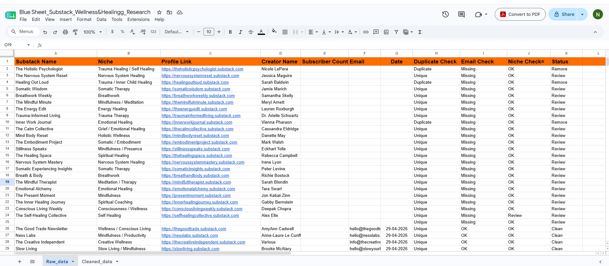
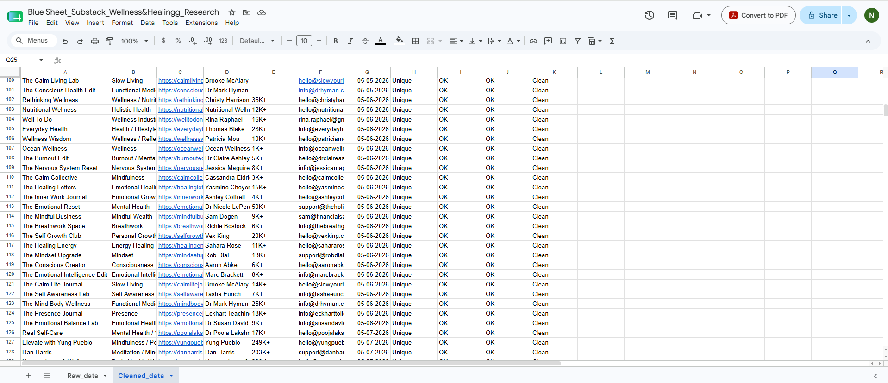

Project Overview
During my internship with PUEPR, I supported business development initiatives by researching creators and newsletters on Substack within the wellness, healing, coaching, mindfulness, and personal development industries. My responsibility was to identify relevant creators, verify their information, organize the research into structured datasets, and ensure every record met predefined quality standards before being used for outreach campaigns. This project combined online research, data validation, spreadsheet management, and quality assurance to produce reliable prospect databases for future partnership and marketing activities.
Business Challenge
The Business Development team required a curated database of high-quality Substack creators operating within specific wellness niches. Because publicly available information varied significantly between creators, each profile required manual verification to ensure accuracy, eliminate duplicate entries, validate available contact information, and organize the data into a standardized format suitable for outreach.
My Responsibilities
- Researched relevant creators on Substack.
- Identified newsletters within assigned wellness niches.
- Collected creator profile information.
- Recorded subscriber counts where publicly available.
- Verified email availability.
- Performed duplicate detection and removal.
- Validated niche classifications.
- Maintained structured research datasets in Google Sheets.
- Prepared clean prospect lists for Business Development.
Research Categories
Tools Used
Evidence Gallery
1. Research Assignment & Qualification Criteria

This ClickUp task defined the daily production target, research objectives, approved wellness categories, and the information required for each creator profile. Following a standardized operating procedure ensured consistency across all collected data while maintaining quality and completeness throughout the research process.
2. Raw Creator Research Database

Research findings were documented in Google Sheets using structured fields including Substack name, niche, profile link, creator name, subscriber count, email availability, duplicate checks, niche validation, and review status. This standardized format enabled efficient quality control before the data progressed to the next stage.
3. Cleaned & Qualified Outreach Database

After validation, duplicate records were removed, available contact information was confirmed, niche classifications were reviewed, and high-quality creator profiles were retained for outreach activities. The resulting dataset provided the Business Development team with an organized and reliable database ready for partnership and marketing campaigns.
Business Impact
- Built a structured creator database for outreach campaigns.
- Improved research consistency through standardized documentation.
- Reduced duplicate records through validation checks.
- Improved data quality before Business Development outreach.
- Delivered organized datasets for partnership prospecting.
- Supported marketing and business development initiatives.